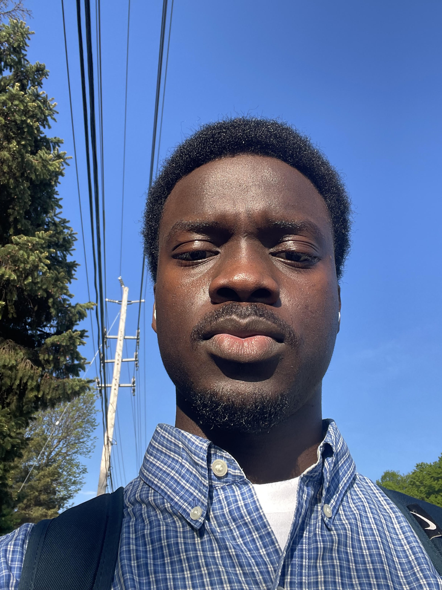

Computer Programming Student
Akinbobola
Caleb Adefolu
I'm a Computer Programming student at Algonquin College with a background in graphic design. I enjoy turning clean design into working code, and I'm currently building my skills in Java, SQL, and full-stack web development.
View My Resume
A little more about me
Outside of coursework, I stay active at the gym and keep sharpening my graphic design eye through personal projects. I also hold certifications in Project Management and Lean Six Sigma, which shape how I plan and problem-solve as a developer.
I study Computer Programming at Algonquin College in Ottawa, Ontario, a polytechnic known for hands-on, career-focused education, where I'm currently on the Dean's Honours List.